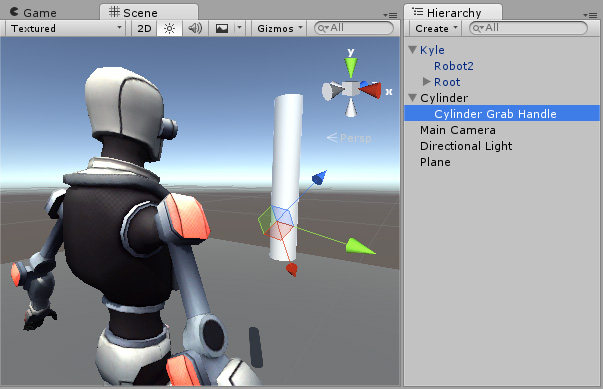

Inverse Kinematics
Most character animation is created by rotating the angles of joints in a skeleton to predetermined values. The position of a child jointA physics component allowing a dynamic connection between Rigidbody components, usually allowing some degree of movement such as a hinge. More info
See in Glossary changes according to the rotation of its parent. The end point of a chain of joints is determined by the angles and relative positions of the individual joints along the chain. This method of posing a skeleton is known as forward kinematicsThe geometry that describes the position and orientation of a character’s joints and bodies. Used by inverse kinematics to control character movement.
See in Glossary.
However, it is often useful to pose joints from the opposite point of view. Start from a chosen position in space, or a goal, and work backwards to find a way to orient the joints so that the end point reaches the goal. This can be useful if you want a character to grab an object or stand on an uneven surface. This approach is known as inverse kinematics (IK). It is supported in Mecanim for a humanoid character with a correctly configured AvatarAn interface for retargeting animation from one rig to another. More info
See in Glossary.
To set up IK for a character, you typically have objects around the sceneA Scene contains the environments and menus of your game. Think of each unique Scene file as a unique level. In each Scene, you place your environments, obstacles, and decorations, essentially designing and building your game in pieces. More info
See in Glossary that a character interacts with. You can use these objects and your character to set up IK within a script. You can use the following Animator functions:
* SetIKPositionWeight
* SetIKRotationWeight
* SetIKPosition
* SetIKRotation
* SetLookAtPosition
* bodyPosition
* bodyRotation
For example, the image above shows a character touching a cylindrical object. To do this with IK and through scripting, follow these steps:
- Create a valid Avatar for your character.
- Create an Animator ControllerControls animation through Animation Layers with Animation State Machines and Animation Blend Trees, controlled by Animation Parameters. The same Animator Controller can be referenced by multiple models with Animator components. More info
See in Glossary with at least one animation for this character. - In the Layers pane of the Animator windowThe window where the Animator Controller is visualized and edited. More info
See in Glossary, click the Cog icon in the Base Layer and enable IK Pass from the context menu. When enabled, IK Pass sends anOnAnimatorIKcallback. In a later step, you will use this callback to implement inverse kinematics in a script.

- Make sure the Animator Controller is assigned to the character’s Animator ComponentA component on a model that animates that model using the Animation system. The component has a reference to an Animator Controller asset that controls the animation. More info
See in Glossary.

- Next, add a script to your character. In this example, the script is named
IKControl. This script sets the IK target for the right hand of the character. This script also changes the look at position so that the character looks towards the cylinder object when grabbed. The full script is listed below:
using UnityEngine;
using System;
using System.Collections;
[RequireComponent(typeof(Animator))]
public class IKControl : MonoBehaviour {
protected Animator animator;
public bool ikActive = false;
public Transform rightHandObj = null;
public Transform lookObj = null;
void Start ()
{
animator = GetComponent<Animator>();
}
//a callback for calculating IK
void OnAnimatorIK()
{
if(animator) {
//if the IK is active, set the position and rotation directly to the goal.
if(ikActive) {
// Set the look target position, if one has been assigned
if(lookObj != null) {
animator.SetLookAtWeight(1);
animator.SetLookAtPosition(lookObj.position);
}
// Set the right hand target position and rotation, if one has been assigned
if(rightHandObj != null) {
animator.SetIKPositionWeight(AvatarIKGoal.RightHand,1);
animator.SetIKRotationWeight(AvatarIKGoal.RightHand,1);
animator.SetIKPosition(AvatarIKGoal.RightHand,rightHandObj.position);
animator.SetIKRotation(AvatarIKGoal.RightHand,rightHandObj.rotation);
}
}
//if the IK is not active, set the position and rotation of the hand and head back to the original position
else {
animator.SetIKPositionWeight(AvatarIKGoal.RightHand,0);
animator.SetIKRotationWeight(AvatarIKGoal.RightHand,0);
animator.SetLookAtWeight(0);
}
}
}
}
To avoid the right hand passing through the Cylinder GameObjectThe fundamental object in Unity scenes, which can represent characters, props, scenery, cameras, waypoints, and more. A GameObject’s functionality is defined by the Components attached to it. More info
See in Glossary, add an empty child GameObject to theCylinderGameObject. To do this, right-click the Cylinder GameObject in the Hierarchy window and select Create Empty. Name this empty child GameObjectCylinder Grab Handle.Position and rotate the
Cylinder Grab HandleGameObject so that the right hand touches but does not pass through the cylinder.

- Assign the
Cylinder Grab HandleGameObject as the Right Hand Obj property of theIKControlscript. - Assign the
CylinderGameObject as the Look Obj so that the character looks towards the centre of the Cylinder when IK Active is enabled.

- Enter play mode.
Your character should touch and release the Cylinder GameObject as you enabled and disable the IK Active checkbox. While in Play Mode, change the position and rotation of the Cylinder GameObject to see how the right hand and character look at reacts.